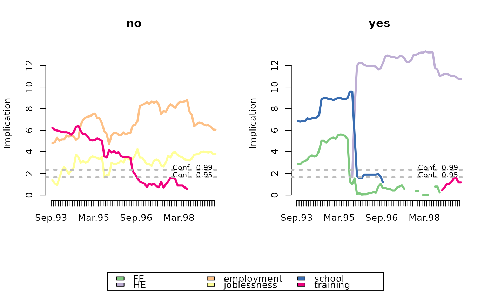
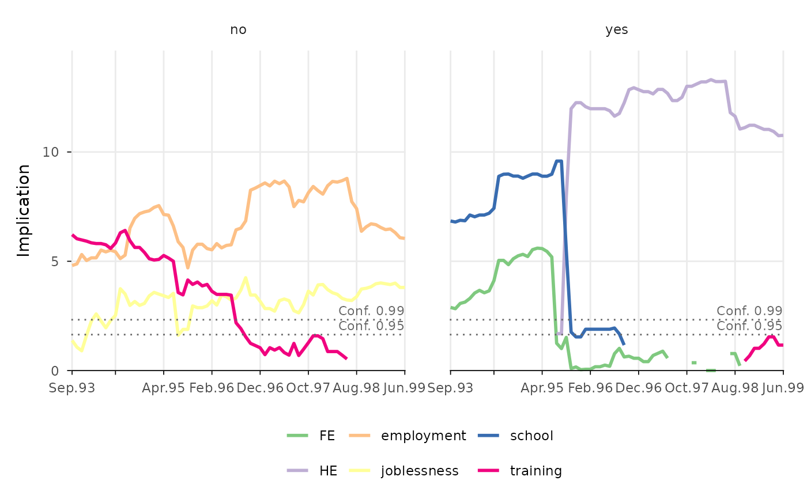
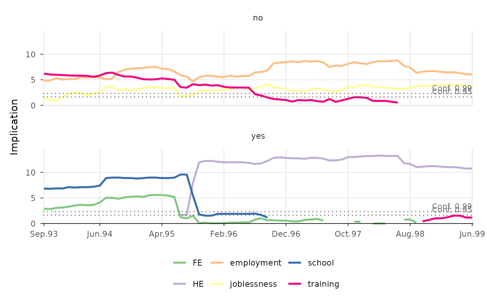

Function for plotting the implicative statistic of states by group and
sequence position computed with
TraMineRextras::seqimplic. The plot is
rendered with ggplot2 (Wickham 2016)
instead of base R's plot function that is used by
TraMineRextras::plot.seqimplic.
Usage
ggseqimplicplot(
seqdata = NULL,
group = NULL,
seqimplicobject = NULL,
weighted = TRUE,
with.missing = FALSE,
conf.level = 0.95,
linewidth = 1,
facet_ncol = NULL,
facet_nrow = NULL
)Arguments
- seqdata
State sequence object (class
stslist) created with theTraMineR::seqdeffunction. Ignored ifseqimplicobjectis specified.- group
A vector of the same length as the sequence data indicating group membership. A distinct plot is generated for each level of group. Ignored if
seqimplicobjectis specified.- seqimplicobject
Object of class
seqimplicgenerated withTraMineRextras::seqimplic. Eitherseqimplicobjectorseqdataandgrouphave to be specified.- weighted
Controls if weights (specified in
TraMineR::seqdef) should be used. Default isTRUE, i.e. if available weights are used. Ignored ifseqimplicobjectis specified.- with.missing
Specifies if missing states should be considered when computing the implicative statistic (default is
FALSE). Ignored ifseqimplicobjectis specified.- conf.level
Confidence level(s) shown as horizontal reference lines; default is
0.95. Several levels can be specified (e.g.c(0.95, 0.99));NULLsuppresses the reference lines.- linewidth
Specifies the width of the lines; default is
1- facet_ncol
Number of columns in faceted (i.e. grouped) plot
- facet_nrow
Number of rows in faceted (i.e. grouped) plot
Value
A line plot of the implicative statistic created by using
ggplot2. If stored as object the resulting list object
(of class gg and ggplot) also contains the data (long format) used for
rendering the plot.
Details
The implicative statistic measures how strongly membership in a
group implies being in a certain state at a given sequence position. The
function uses TraMineRextras::seqimplic
to compute the statistic. Alternatively, an object of class seqimplic
can be passed to the function.
Like in TraMineRextras::plot.seqimplic, the (sign-reversed)
implicative statistic is shown for each state and position as line plot,
with a separate plot for each group. Values below 0 are not shown. Values
above the dotted reference line(s) indicate that the implication is
significant at the respective confidence level.
The statistic is reshaped into a long data format and plotted with
geom_line. The group-specific plots are produced by using
facet_wrap. The data and specifications used for
rendering the plot can be obtained by storing the plot as an object. The
appearance of the plot can be adjusted just like with every other ggplot
(e.g., by changing the theme or the scale using + and the respective
functions).
References
Wickham H (2016). ggplot2: Elegant Graphics for Data Analysis, Use R!, 2nd ed. edition. Springer, Cham. doi:10.1007/978-3-319-24277-4 .
Examples
library(TraMineR)
# Use example data from TraMineR: mvad data set
data(mvad)
mvad.seq <- seqdef(mvad, 17:86)
#> [>] 6 distinct states appear in the data:
#> 1 = FE
#> 2 = HE
#> 3 = employment
#> 4 = joblessness
#> 5 = school
#> 6 = training
#> [>] state coding:
#> [alphabet] [label] [long label]
#> 1 FE FE FE
#> 2 HE HE HE
#> 3 employment employment employment
#> 4 joblessness joblessness joblessness
#> 5 school school school
#> 6 training training training
#> [>] 712 sequences in the data set
#> [>] min/max sequence length: 70/70
# typical states of pupils with/without 5 or more GCSEs
# with TraMineRextras
mvad.si.gcse5eq <- TraMineRextras::seqimplic(mvad.seq, group = mvad$gcse5eq)
plot(mvad.si.gcse5eq, lwd = 3, conf.level = c(0.95, 0.99))

# with ggseqplot (using the seqimplic object ...)
ggseqimplicplot(seqimplicobject = mvad.si.gcse5eq,
conf.level = c(0.95, 0.99))

# ... or using the sequence data and the group vector)
ggseqimplicplot(mvad.seq, group = mvad$gcse5eq,
conf.level = c(0.95, 0.99), facet_ncol = 1)
